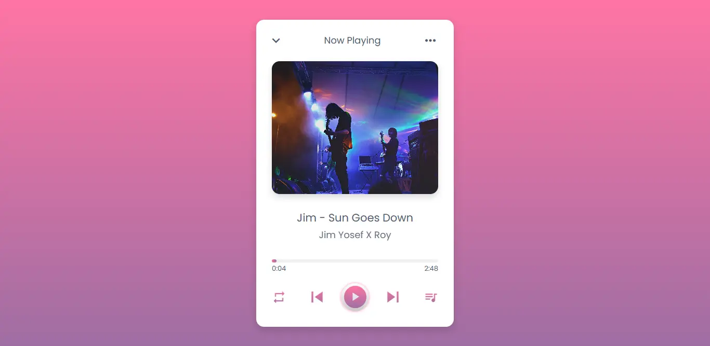

Simple music player made with JS. The songs are preset and you can change it modifying the music-list.js file and provide your own song files.
With this app, you can play and pause mp3 files, that you add to the folder project.
Moreover, can show the cover of the song, if this image was provided into the folder project and set in the code, using the file music-list, thus contains all the metadata of the songs avaliable.
Besides, you can play the next, or the previous song include in the project folder, as well as playing in loop, sees the list of all songs, and select any you want.
Each song includes in its metadata, the title of the song, an related image, the artist, and the duration of the song.
Technologies used:
- HTML
- CSS
- Vanilla JS
- Material icons
- Google Fonts
